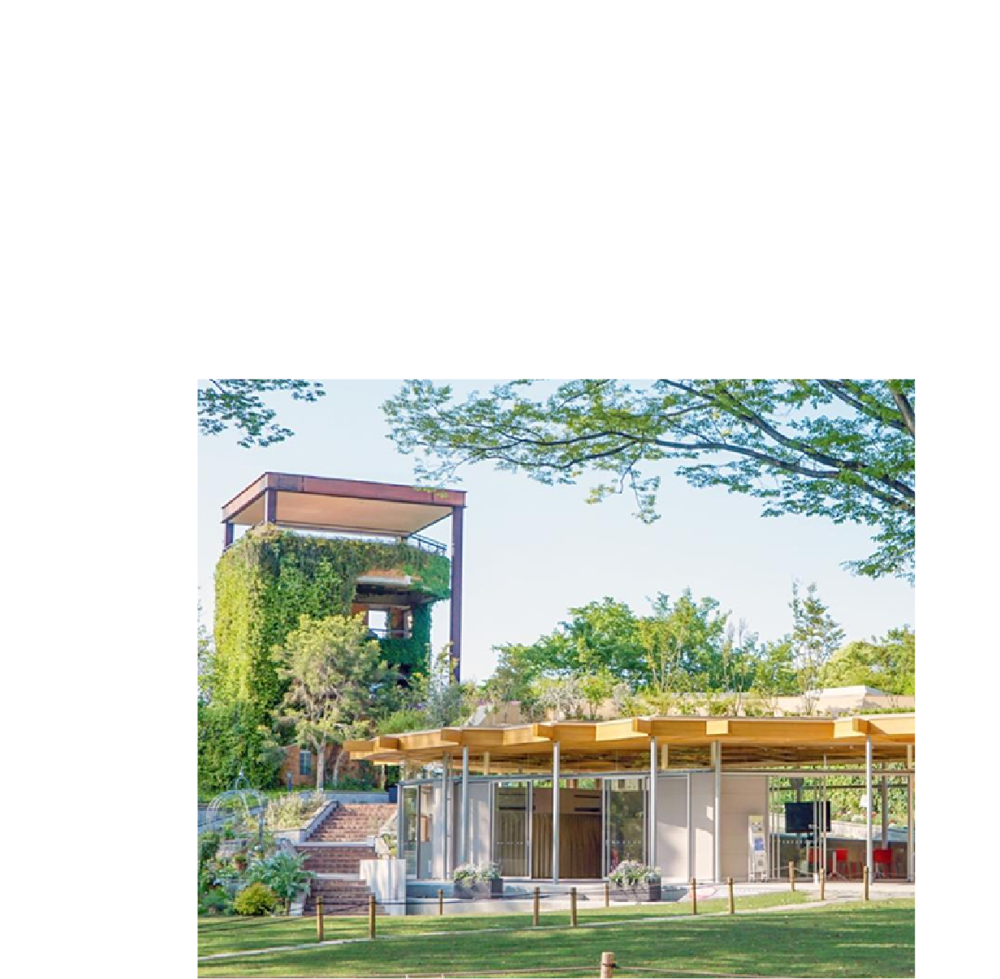
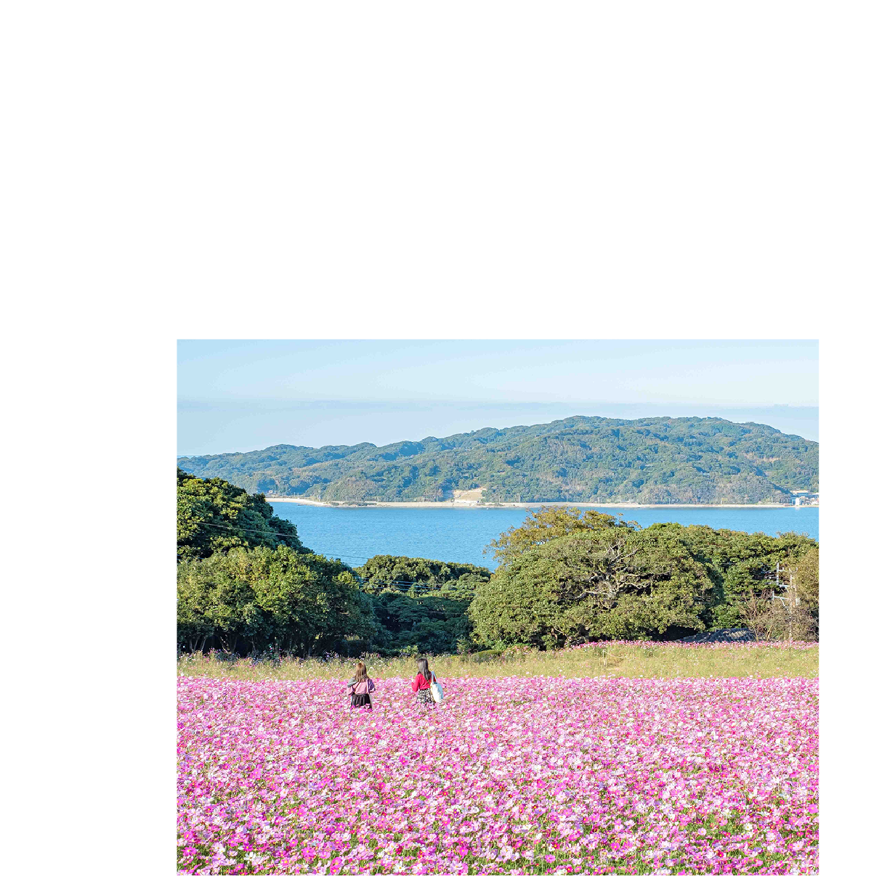
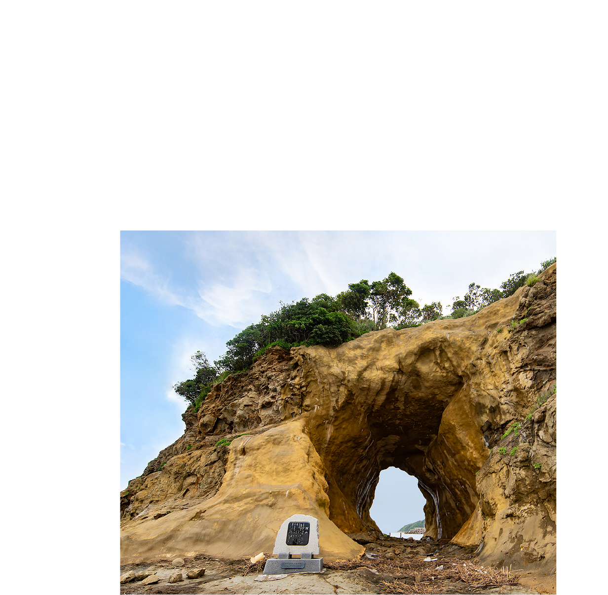

-
福岡県
福岡県は、博多祇園山笠や太宰府天満宮など、歴史と伝統が息づくにぎやかな土地です。海や山の自然も豊かで、屋台文化やもつ鍋、明太子など地元グルメも楽しめます。人情味あふれる人々と触れ合いながら、歴史・文化・食をゆったり満喫できる、親しみやすい旅の県です。

お土産

観光地
-

福岡市動植物園
福岡市の「福岡市動植物園」は、動物と植物が一緒に楽しめる家族向けスポットです。ゾウやライオンなどの動物を間近で見られ、四季折々の花や木々も美しく散策できます。子どもも大人も一緒に楽しめ、自然と生き物の魅力を体感できる人気の観光地です。
-

能古島
福岡の「能古島」は、海に囲まれた自然豊かなリゾートアイランド。季節ごとに花々が咲き誇る公園や、海を望む絶景スポットが魅力です。のんびり散策したり、自転車で島を巡ったり、家族や友人と一緒に自然と触れ合いながら、福岡ならではの癒しの時間を楽しめます。
写真提供：福岡県観光連盟 -

洞山
福岡の「洞山」は、四季折々の自然が楽しめる山の観光スポットです。ハイキングや散策で美しい景色を満喫でき、頂上からの眺めは絶景。家族や友人と一緒に自然と触れ合いながら、リフレッシュできるひとときを過ごせる、福岡ならではの癒しスポットです。
写真提供：福岡県観光連盟
体験
-

八女手すき和紙体験
福岡県・八女で楽しめる「八女手すき和紙体験」では、伝統の和紙作りを自分の手で体験できます。紙すきの工程を学びながら、世界にひとつだけのオリジナル和紙を作れるスポット。親子や友人と一緒に、手仕事の温かさと楽しさを感じられる体験です。